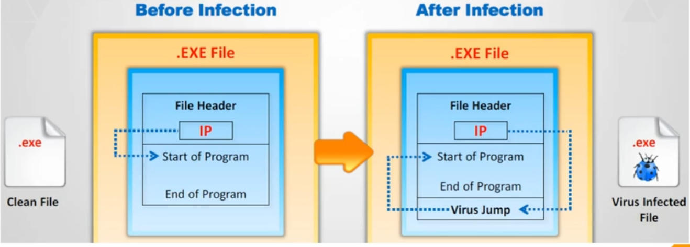
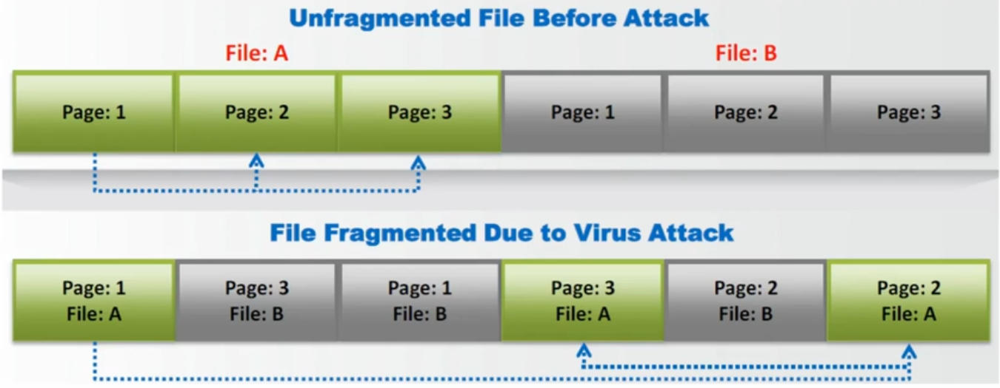
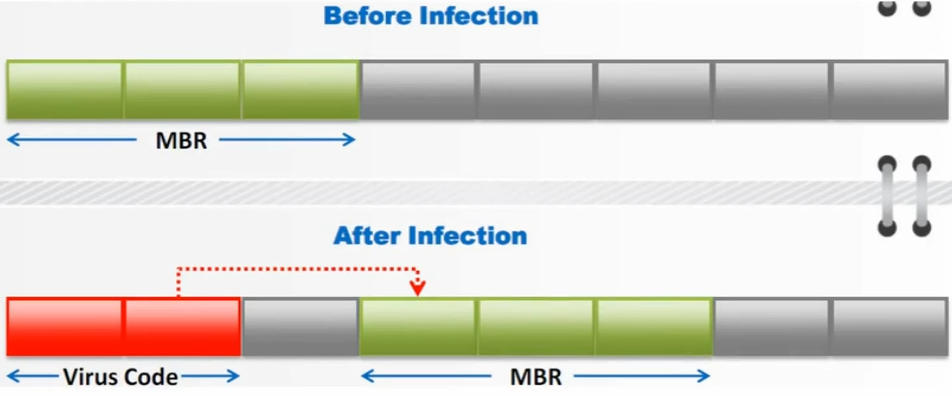

A computer virus is a type of malware that propagates by inserting a copy
of itself into and becoming part of another program., computer boot sector
or document.
Virus Characteristics
Infects other program
Transforms itself
Encrypts itself
Alters data
Corrupts files & programs
Propagates
Stages of a Virus Lifetime
Design (using Programming Language, Construction Kits)
Replication
Launch
Detection (identified as threat)
Incorporation (defenses)
Elimination
Phases of a Virus
Dormant Phase
Propagation Phase (after manually run copy itself)
Triggering Phase (Main work start)
Execution Phase
Working of a Virus
Infection Phase

Attack Phase
Time to perform task
Location corrupt

Types of Viruses
System or Boot Sector Viruses (using Master Boot Record[MBR])

File Virus (executable File)
Multipartite Viruses (boot Sector & Multipartite both at same time)
Macro Viruses (Macro language visual basic for aplication (VBA) Ex: Office,
)